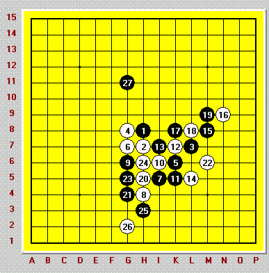

残月刀这个变化怎么杀
#1 残月刀这个变化怎么杀作者：笑雨辰 发表时间：2008-11-16 1:20:49
=======上图对应的爱五子棋谱代码如下，以便你拆解：========
h8h7k7g8i5g7j6h4g6i6j5j7i7k5l8m9j8k8l9h5g4l6
======================================================
［ 失落刀 于 2008-11-17 14:22:18 时奖励此帖[金币加 20 威望加1］
#2 Re:残月刀这个变化怎么杀作者：红豆 发表时间：2008-11-16 8:28:39
13 =20 就能杀#3 Re:残月刀这个变化怎么杀作者：红豆 发表时间：2008-11-16 8:40:51
=======上图对应的爱五子棋谱代码如下，以便你拆解：========
h8h7k7g8i5g7j6h4g6i6j5j7i7k5l8m9j8k8l9h5g4l6g5h6h3g3l10
======================================================
#4 Re:残月刀这个变化怎么杀作者：wrwak 发表时间：2008-11-16 10:37:22
杀不了 找过17吧 唯一的白棋下法了
#5 Re:残月刀这个变化怎么杀作者：笑雨辰 发表时间：2008-11-16 22:23:24
谢谢红豆
谢谢wrwak
#6 Re:残月刀这个变化怎么杀作者：wrwak 发表时间：2008-11-16 22:24:45
17手换到18手上面 有希望